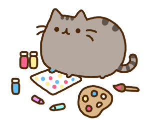
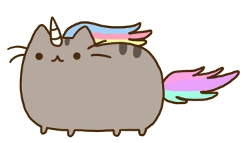

The earliest records of our Lord and Saviour dates from the year 2010, when the world was first graced by the presence of our feline Overlord. The Overlord descended upon the highest Heavens herself, basked in a holy light as she spoke a single word, which up till this day remains our Code of Honour, "Meow."
And from that day on, our Overlord brought forth enlightenment to all corners of this decadent world. She came, she saw and she conquered, her Glory and Grace spreading through the populations, giving hope, warmth and love. She bestowed upon humanity the most precious gift, a gift of joy and happiness, and with this gift, mankind had finally found peace. Wars ended, no longer was blood shed, death and plagues a thing of the past. Mankind was freed, we were enlightened to the beauties of this world by the honourable deeds of our feline Overlord. It was truly the birth of a new era. Her descent from the High Heavens, to join us in our desecrated world, embodies her love and tolerance for us unworthy mortals. Thus, this cult was born to show our gratitude towards her sacrifice and faith in us, and we fall before her paws in worship, in hope that someday we may atone for our sins and prove ourselves truly worthy of her love.

Here is our Lord and Saviour gracing us with the joys of colour
A pair of her loyal followers (The Holy Prophets) dictated every testament our feline Overlord spoke in the form of our Holy Meows, which is archived in this Holy Sanctuary. We hope that you might find her words enlightening and continue to spread the love and joy she has given us through this world.
Here is our feline Overlord showing mankind the true ways of class and elegance
Our purpose remains until now to simply worship, give praise and to continue spreading the gift of happiness and joy bestowed upon us by our feline Overlord. We gather to show our gratitude towards her sacrifice and her love, and to perhaps, perform the necessary sacrifices ourselves to truly show our appreciation towards our Saviour.
Join us in this New Holy Age and bask in the Grace of our majestic Lord. We only wish to do good in our cause and to make the world a better place, to pass on the ways of the Pusheen, such that the world may forever, remain in peace and harmony.
Simple head to the "Join Up" page to put your name down as one of the new worshippers of this Holy Cause.

Here is our Lord Pusheen bestowing upon us the gift of the first rainbow